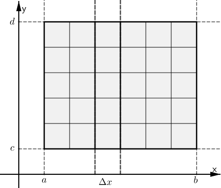
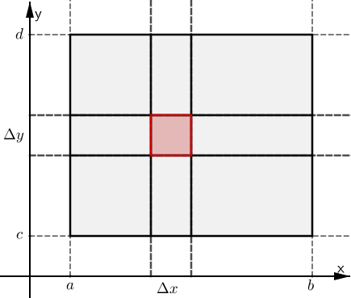

Chapter 23
By the end of this section, you should be able to answer the following questions:
Recall that if $y=f(x),$ the area under the curve over the interval $I = [a,b]$ is
$\displaystyle \int_I f(x)dx = \lim \sum_{i=1}^{n} f(x_i^*)(x_i-x_{i-1})$
where $x_i^* \in [x_i,x_{i-1}]$.
\[ \int_I f(x)dx = \lim \sum_{i=1}^{n} f(x_i^*)(x_i-x_{i-1}) \]
Suppose we have a surface $z=f(x,y)$ above a planar region $R$ in the $x$-$y$ plane.
Before moving onto general regions, we start by considering the case where $R$ is a retangle. That is,
$R = \left\{ (x,y) \in \R^2 | a\leq x \leq b, c\leq y \leq d \right\}$
$ R = \left\{ (x,y) \in \R^2 | a\leq x \leq b, c\leq y \leq d \right\} $
|
Divide $R$ into subrectangles by dividing $[a,b]$ into $m$ subintervals $[x_{i-1},x_i]$, each of width $$\Delta x = \frac{b-a}{m}$$ and $[c,d]$ into $n$ subintervals $[y_{i-1},y_i]$ of equal width $$\Delta y = \frac{d-c}{n}.$$ Combining these gives a rectangular grid $R_{ij}$ with subrectangles each of area $\Delta A= \Delta x\Delta y.$ In each subrectangle take any point $P_{ij}$ with co-ordinates $(x_{ij}^*, y_{ij}^*).$ |


|
|---|
|
The volume of the box with base the rectangle $\Delta A$ and height the value of the function $f(x,y)$ at the point $P_{ij}$ (so the box touches the surface at a point directly above $P_{ij}$) is \[ V_{ij} = f\left(x_{ij}^*, y_{ij}^*\right)\Delta A \] Then for all the subrectangles we have an approximation to the required volume $V$: \[ V\approx \sum_{i=1}^m\sum_{j=1}^n f\left(x_{ij}^*, y_{ij}^*\right) \Delta A, \] the double Riemann sum. |
|
|---|
|
Let $\Delta x \to 0 $ and $\Delta y \to 0,$ i.e., $m\to \infty$ and $n\to \infty,$ then we define the volume to be \[ V= \lim_{m\to \infty} \lim_{n\to \infty} \sum_{i=1}^m\sum_{j=1}^n f\left(x_{ij}^*, y_{ij}^*\right) \Delta A, \] if the limits exist, and we write this as $$\ds \iint_Rf(x,y)~dA. $$
We call $f$ integrable if the limit exists. |
|
|---|
We define $\displaystyle \int_c^df(x,y)~dy$ to mean that $x$ is fixed and $f(x,y)$ is integrated with respect to $y$ from $y=c$ to $y=d$. So \[ A(x) = \int_c^df(x,y)~dy \] is a function of $x$ only. If we now integrate $A(x)$ with respect to $x$ from $x=a$ to $x=b$ we have
$\displaystyle \int_a^bA(x)~dx = \int_a^b\left[ \int_c^d f(x,y)~dy\right]dx$ $ \displaystyle = \int_a^b \int_c^d f(x,y)~dy ~dx$
This is called the iterated integral.
$\displaystyle\int_0^2 \int_1^3 x^2y~dy~dx = \displaystyle
\int_0^2 \left[ \int_1^3 x^2y~dy \right]dx$
$\qquad \qquad \qquad \;\;\;= \displaystyle \int_0^2 \left[ x^2
\frac{y^2}{2}\Bigg|_{y=1}^{y=3} \right]dx$
$\qquad \qquad \qquad \;\;\;= \displaystyle
\int_0^2 \left( x^2 ~\frac{3^2}{2} - x^2 ~\frac{1^2}{2}
\right)dx$
$= \displaystyle \int_0^2 4x^2~dx$
$\qquad \qquad \qquad \;\;\;= \displaystyle
\frac{4}{3}x^3\Bigg|_{x=0}^{x=2}$
$= \displaystyle \frac{4}{3} \left( 2^3 - 0^3 \right)$
$= \displaystyle \frac{32}{3}.$
$\displaystyle\int_1^3 \int_0^2 x^2y~dx~dy = \displaystyle
\int_1^3 \left[ \int_0^2 x^2y~dx \right]dy$
$\qquad \qquad \qquad \;\;\;= \displaystyle \int_1^3 \left[ y
\frac{x^3}{3}\Bigg|_{x=0}^{x=2} \right]dy$
$\qquad \qquad \qquad \;\;\;= \displaystyle
\int_0^2 \left( y~ \frac{2^3}{3} - y ~\frac{0^3}{3} \right)dy$
$= \displaystyle \int_1^3 \frac{8}{3}y~dy$
$\qquad \qquad \qquad \;\;\;= \displaystyle
\frac{8}{3} ~\frac{1}{2}~ y^2\Bigg|_{x=1}^{x=3}$
$= \displaystyle \frac{4}{3} \left(3^2 - 1^2 \right)$
$= \displaystyle \frac{32}{3}.$
We have just calculated the volume of the solid outlined above.